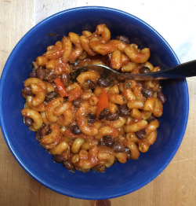

Skillet Beer Chili Mac

Description
Skillet Beer Chili Mac is a go-to recipe of mine when I want something easy to cook.
It's a simple recipe: cut everything up, throw it in a pot and let it simmer for a bit, then BAM! You've got a tasty chili :)
Makes enough for 4-6 people
Ingredients
- 1 tbsp olive oil
- 1 yellow onion - chopped
- 1 carrot - chopped
- 1 red bell pepper - chopped
- 1 jalepeno - seeded and minced
- 2 tbsp mild chili powder
- 2 tsp ground cumin
- 2 tsp smoked paprika
- a pinch of salt
- 2 tbsp tomato paste
- 1 15 oz can unseasoned tomato sauce
- 1 cup beer
- 3 cups vegetable broth
- 3 cups macaroni
- 3 cups mixed cooked beans
- 1/4 cup nooch
- 1 tbsp maple syrup
- 1 tbsp lime juice
Steps
-
In a large pot, heat the oil over medium heat. Add the onion and cook until softened an starting to get golden, about 5 minutes
Add the carrot, bell pepper, and jalapeno and cook for another 2 minutes. Fold in the chili powder, cumin, smoked paprika, salt
and tomato paste and cook for 1 minute while stirring so that the spices warm up.
-
Add the tomato sauce, beer and veggie broth and bring it to a simmer. Stir in the pasta, cover, and cook, stirring occasionally until
the pasta is tender, 9-12 minutes. When the pasta is tasting right, remove from heat and stir in the beans, nooch, maple syrup, and lime juice.
-
Taste and adjust how you see fit, then serve with whatever toppings you'd like!
Return Home